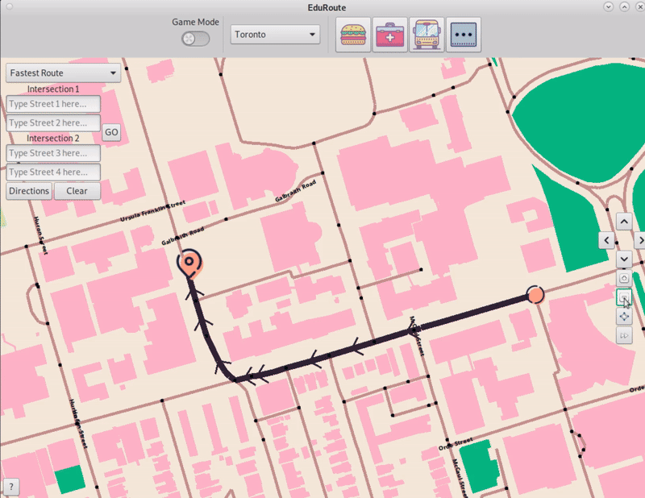

ECE297: EduRoute
- Developed in C++ using GTK and a provided OSM API
- Teaches users their routes via an active recall approach, making commuting more enjoyable
- Worked on graphics, GUI design and functionality, pathfinding heuristics, and project organization

ECE243 Final Project: 2048
- Developed from scratch in C
- NIOS-II Assembly knowledge used in the process
- Run on a DE1-SoC FPGA Board

Personal Project: Audio Plugin Development
- Work in progress: developing a suite of simple audio effect plugins
- Building with the JUCE C++ framework
- CoolEQ (pictured) is a simple 3-band equalizer that can be used to boost/attenuate signal frequencies.
- Applying digital signal processing knowledge from ECE216

TD Bank: Various Projects
- Developed multiple macros / query automations using VBA, Python, and SQL
- Currently building a data lookup engine using C#, which will pull data from MS Access and make it readable to users based on input criteria
- For security reasons, no picture is available. Please visit my GitHub if you would like to see the source code.